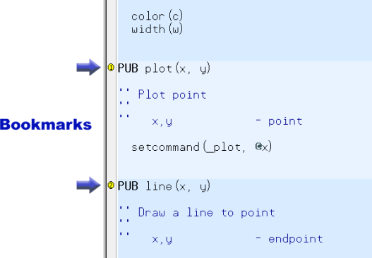

You can set bookmarks on various lines of each edit page’s source code to quickly jump to desired locations. Below is an example of two bookmarks set in the Graphics object’s edit tab. To enable bookmarks, press Ctrl+Shift+B to make the Bookmark Gutter visible; a blank area to the left of the edit page. Or, you may check and uncheck the Show Bookmarks box under the Preferences - Appearance Tab in the Preferences Dialog
Click the mouse in the Bookmark Gutter next to each line you want to be able to navigate to quickly, then from anywhere in the page, press Ctrl+# where # is the bookmark number that you want to go to; the cursor will instantly jump to that location. Up to 9 bookmarks (1 – 9) can be set in each edit tab. The bookmarks are not saved in the source code; however, the bookmark settings of the last 10 files accessed are remembered by the Propeller Tool and restored upon reopening those files.
Click on Bookmark Gutter (blank area left of edit page) to set or clear bookmarks. Press Ctrl+# where # is the desired bookmark number to instantly navigate to an existing bookmark.

Example edit page with Bookmarks enabled and two bookmarks set.
Propeller Help Version 1.2
Copyright © Parallax Inc., dba Parallax Semiconductor
6/17/2011